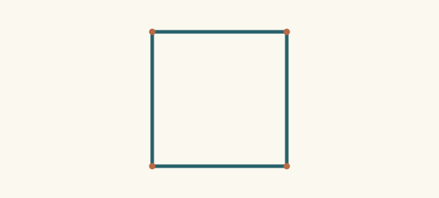
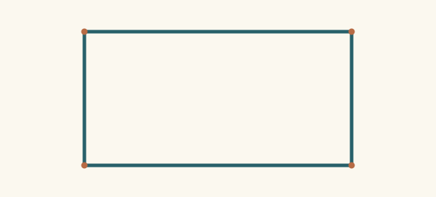
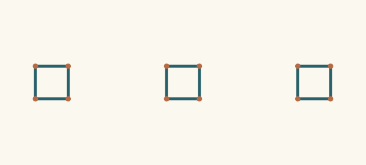
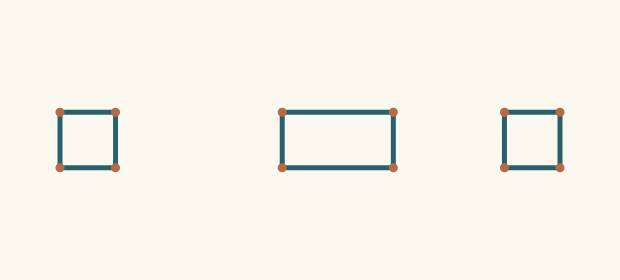

Square-like and rectangular drawings illustrate a declared unmeasured participation basis. An earlier supported coarse contour can survive withdrawal of a finer equality assumption. All pictures show fresh native output after analysis.
A formal common-reach default is revised without retracting the true coarse contour. Screen right angles are presentation; no Euclidean square inference is claimed.
A useful default

E01-a · Coarse contour supported 0 assumptions carried · 0 withdrawn All published sources
Coarse headings and actual closure admit both constructions. Reusing one parameter is the simpler provisional choice; no source spans have been published.
Reveal a distinguishing span

E01-b · Coarse contour supported 0 assumptions carried · 1 withdrawn All published sources
The source now exposes two shared-basis participations horizontally and one vertically. The shared-span assumption is refuted; the same coarse four-cycle remains valid.
Send the distinction next time
E01-c · Coarse contour supported 0 assumptions carried · 0 withdrawn All published sources
The next receiver receives the actual distinguishing publication immediately and need not make and repair the same default.
A finite reusable template changes one binding, keeping unaffected correspondences inspectable.
Reuse through the hidden cell

E02-a · Coarse contour supported 0 assumptions carried · 0 withdrawn All published sources
The exposed outside cells agree. The middle cell remains unspecified, so uniform sharing is an economical guess.
Keep the rule, scope the exception

E02-b · Coarse contour supported 10 assumptions carried · 5 withdrawn All published sources
Only the middle horizontal span differs. The revised interpretation preserves outside equivalences and all three closures instead of abandoning the template.
Choosing an actionable interpretation is separate from declaring all observations reconciled.
Two incompatible reports
No admissible output
E03-a · Conflicting source evidence remains 0 assumptions carried · 0 withdrawn All published sources
Two exposed routes assert incompatible spans for the same roles, source instance and observation event. No hypothesis satisfies the whole evidence set.
Lower-resolution success is useful and explicit; it does not certify exact reconstruction of the source spans.
The fine request is blocked
No admissible output
E04-a · No admissible output 0 assumptions carried · 0 withdrawn All published sources
The engine can execute only the shared-reach program. Exposed unequal source spans refute that candidate; missing capability cannot make the fine evidence disappear.
Accept an explicitly coarser answer
E04-b · Coarse output; finer request blocked 0 assumptions carried · 0 withdrawn Topology only · fine span reports carried outside this read
A separate topology-only working request leaves the fine publication outside the selected read. The blocked exact request and unaccounted fine evidence are carried alongside the useful four-cycle output.